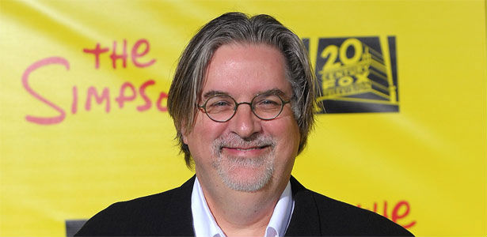

Matthew Abram Groening ou simplesmente Matt Groening (Portland, 15 de fevereiro de 1954)
é um cartunista, roteirista, produtor, animador e dublador norte-americano, criador das
séries de televisão Os Simpsons e Futurama. Atualmente trabalha como consultor criativo
de Os Simpsons.
Antes de trabalhar na televisão, Groening criou as tirinhas sindicalizadas Life in hell,
que ainda são impressas por vários jornais semanais e foram reunidas em uma antologia,
organizada em livros como School is Hell, Love is Hell, Work is Hell e The Big Book of Hell.
Life in Hell chamou a atenção do escritor-produtor de Hollywood James L. Brooks que, em 1985,
entrou em contato com Groening propondo-lhe trabalho em uma futura série de animação da emissora
Fox, a ser exibida no programa de variedades The Tracey Ullman Show. Brooks, dono da Gracie Films,
planejava uma simples adaptação dos personagens de Life in hell à nova série. Groening então, temendo
perder os direitos autorais sobre seu trabalho, decidiu-se por criar algo inteiramente novo, com uma
típica família norte-americana como tema central.
